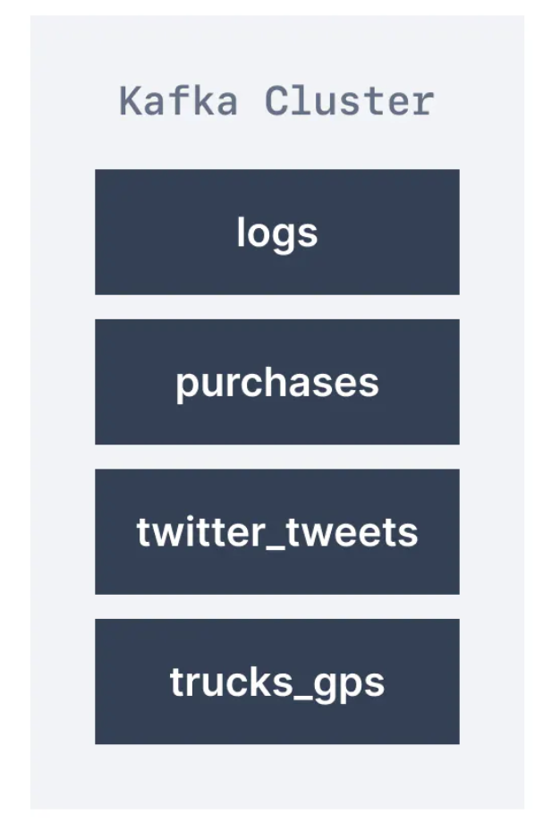
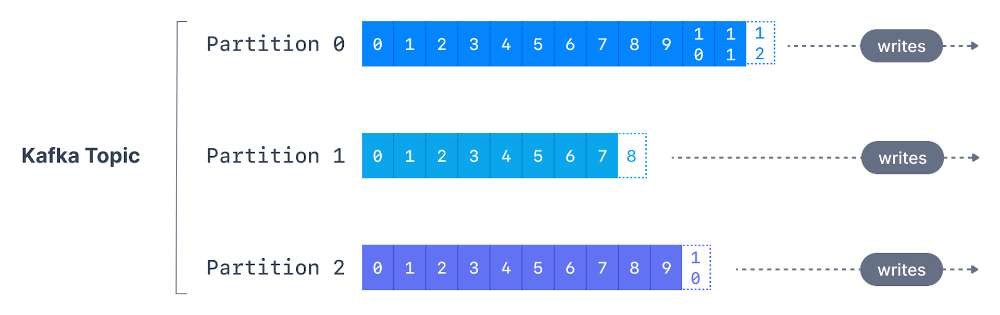
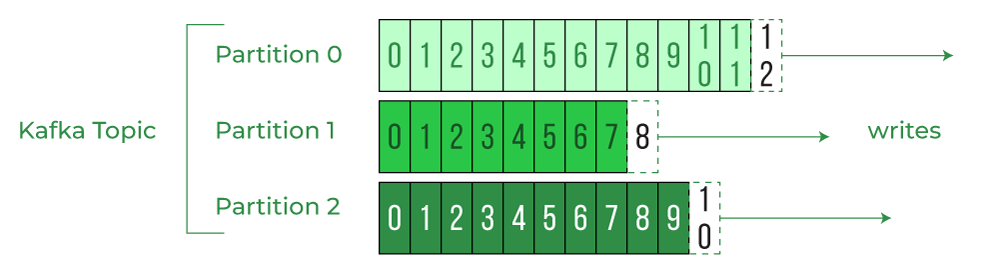

1. Topic

-
与数据库使用表来组织和分割数据集类似，Kafka使用主题来组织消息；
-
主题通过名称来识别，如日志主题，其中可能包含应用程序的日志消息，
而订单主题可能包含应用程序的订单数据； -
主题由名称标识(identify by topic name)，消息格式(msg format)
可为任何类型；消息的序列(msg sequence)称为数据流(data stream)； -
与数据库表不同，主题不可查询queryable，必须创建生产者来向主题发送数据，
而消费者则按顺序从主题中读取数据(read data from topic in order)； -
主题中数据默认存储一周(也成为默认消息保留期，可配置，default msg retention period)；
-
此删除旧数据的机制确保kafka集群不会随时间推移，回收主题而耗尽磁盘；
run out of disk space by recycling topic over time； -
kafka中的主题不可变(immutable，immutability)，一旦数据写入分区，则无法更改；
2. Partition
-
主题可拆分成分区(split in partition)，如1000个分区，每个主题可有任意多个分区；
-
除非提供key，否则数据将随机分配给分区(assign randomly to partition)；
-
数据只保存有限的时间，默认一周，此选项可配置；
-
每个分区中的消息都按顺序(order)排列，
-
只有在一个分区内，而不是跨分区(across partition)，才能保证顺序(order)；
-
分区数在创建时指定，分区编号从0 ~ (N - 1)，N是分区数，
如图为具有三个分区的主题，每个分区末尾都附加信息； -
Kafka主题是不可变：一旦数据被写入分区，就无法更改；

